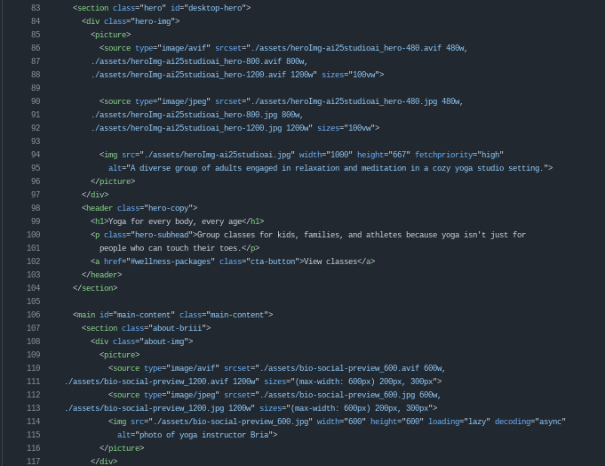
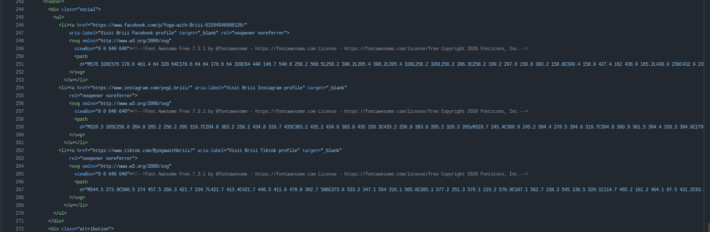
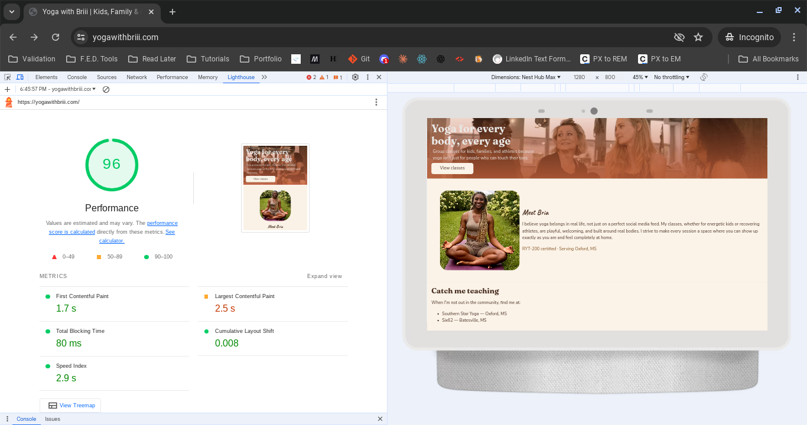
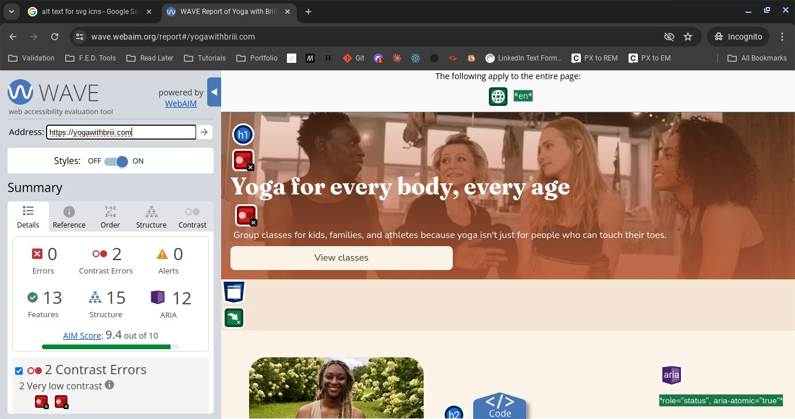

Yoga with Briii
A real client marketing website for a mobile yoga instructor, where I made a photo-heavy page load faster with properly sized responsive images and by removing third-party weight.

- Role
- Front-End Developer
- Timeline
- Dec 21, 2025 - Present
- Technologies
- JavaScript, HTML5, CSS3
1. The Project
Bria wanted to take her yoga instruction beyond the studio and reach organizations and businesses. She had social media accounts, but she didn't have a dedicated website where prospective clients could find her services in one place.
I built a marketing website to introduce her business, explain her offering and teaching philosophy, and give vistors ways to connect with her. Those included a contact form and the option to schedule a call through Calendly.
The idea was simple: give Bria a home base she could direct people to when she wanted to tell them about her services.
2. The Goal
- I wanted visitors to be able to understand what she offered, determine whether her services suited their needs, and take the next step toward contacting her.
- That meant creating an accessible website that could serve both individual clients and businesses interested in yoga sessions. And that also meant keeping the implementation manageable while her business was still developing its systems for payments, scheduling, and online visibility.
3. The Approach
Version 1.0
My first version was a generic landing page. After sharing with my coding bootcamp community, I received feedback about a sliding horizontal scrollbar so I started over. In full transparency, this was a gift I gave to her to support her desire to take 2026 seriously and really market herself as mobile yoga instructor. So, I went sat down with Bria, discussed her goals and what she needed to have for a MVP. After our conversation, this project went from a birthday gift to becoming my first client.
Version 2.0: The requirements
Those conversations covered more than the appearance of the website, we discussed scheduling tools such as Calendly vs Acuity, payment options such as Stripe vs PayPal, and where to establish domain ownership. In the end, we discovered not every possibility needed to become a feature immediately. For example, adding a payment page to the site. I told her honestly I dont feel comfortable with backend or security so we discussed possible third-party alternatives. And she needed to set up an offical bank account. All in all, it was a great lesson in building for the client's current needs without creating unnecessary complexity or committing her to systems she wasn't ready to use.
Version 2.5-3.0: Choosing the right tools
I briefly rebuilt the project in React. Why? This would be a perfect opportunity to practice my newly acquired React skills...not that client website actually needed it. One step forward, three steps back😅 After working through that version, I realized that React introduced more complexity than this particular static marketing site needed. I returned to HTML, CSS, and JavaScript for version 3.0. With the feedback about visual direction from the client, version 4.0 (the live site) , the project actually fulfills her requirements rather than my ego.


4. Technical Spotlight
One of the most infuriating parts of this project was the image-loading. Deep in debugging, I learned about Cumulative Layout Shift (CLS), image formats, and heavy performance load caused by improperly sized images and third-party scripts.

5. The Challenge
- Image performance:The 6000px hero and 3000px card images were causing slow loading and layout shifts.
- Responsive images: Getting images with different dimensions and proportions to display correctly across screen sizes.
- Third-party scripts: Calendly and Font Awesome integration introduced additional performance weight.
6. The Solution
Format is not Size
AVIF alone just changed the source type not the width. [Dont worry, I wrote an article on Dev.to] In a nutshell, the fix was exporting the actual files at their real widths, and the writing srcset and sizes correctly for the displayed size, bio at 200/300, cards at 295/604, hero at full width, with lazy below the fold and width/height set by ratio so the space was reserved.
Test the same way every Time
Debugging with Lighthouse I kept the same parameters: incognito mode, navigation, mobile, performance only, on the live domain, and 10 runs to get a median that truly reflects a typical run. I discovered that through testing to see if the needle was being moved in the right direction and to lock in if I was understanding how properly sized images.
Remove, not just defer, when the project is Small
Fun fact: The Font Awesome kit is amazing for people who need the whole library...but I didn't. I only needed 3 icons. I deleted the kit, downloaded the 3 inline SVGs, then tested again with the same 10-run parameters. My median performance score rose from 81.0 to 88.0!


7. The Result
On November 1, I ran 10 Lighthouse tests on Bria's website in Chrome Incognito mode using the same parameters but on her new domain site yogawithbriii.com. The median performance score was 88.0 out 100, with a mean of 87.3 and individual runs ranging from 71 to 98. FIve of the 10 runs scored at or above 90. Not too shabby for a photo-heavy site with third party scripts running under Lighthouse's mobile network/CPU throttling. It's not consistently in the 90s yet, but the testing also showed me there is still room to improve.

8. Accessibility
Tools Used
- WAVE
- Google Lighthouse
- Responsive Test Tool
Key improvements made
- Added accessible text for the three inline SVG social icons. A WAVE run on yogawithbriii.com on November 3 went from 3 missing alternative text errors to 0 errors after that fix.
- Added aria-labels to the social links and a visible focus outline for those links, and used Responsive Test Tool to check the site across different viewport sizes.
Two contrast errors remain in that November 3 WAVE run, both for hero text over the photo and gradient overlay. WAVE cannot evaluate contrast through transparency and gradients, so it flags the white text on transparent background even though the text sits on the darkest part of the gradient. A solid background behind just the text would clear those flags, but the clients likes the background as is.

9. Current Status
The site is currently live at yogawithbriii.com. To date, I haven't accured enough meaningful analytics or user feedback to evaluate its real-world impact.
10. Lessons Learned
- Technical: Images and third-party scripts greatly affect performance and layout stability, even on a simple site.
- Engineering/Debugging: Diagnostic tools give me a starting point for investigating problems instead of guessing.
- Dev Growth: I learned that debugging depends heavily on how well I frame the question. Better search terms and more specific technical questions led me toward better documentation and solutions.
- Deployment:It is funny. Skillcrush taught me about GitHub Pages. Frontend Mentor introduced me about sites like Vercel and Netlify, but this project was really live. Despite all those projects I had done, I still wasn't really on the web, at best I was renting space. It wasn't until the client brought her domain and I connected it to Netlify that I felt like a real estate agent handing the client the keys to their new home that I built. It made me feel official when I conntected the DNS and HTTPS as well as explain to the client.
- Client Relationship: As a freelancer, I am not just building a website. To be honest, they can go to SquareSpace for a beautiful site for cheaper My value is the human element. I didn't realized that I am carrying the client's worries, fears, and anxieties. I found myself having to encourage and guide the client, even though I was scared and unsure myself. I had to be brave for them. With my background in retail, I felt confident in not overpromising. I simply said I didnt know, but I promise that I would find out.
11. What I'd do next
First, I'd like to incorporate authentic photographs from her yoga sessions, with appropriate consent and permissions in place. .
Second,I'd also add social proof section.
Third, I did a little SEO but it would be cool to learn more so I better positions small businesses especailly in regards to AI SEO.
Fourth, the client has also asked about analytics, so adding analytics tracking is another skill I want to add to my toolkit, so future decisions can be based on real usage, not assumptions.
Fifth, The site loads all three families, Fraunces, Nunito Sans, and Caveat, but with the whole variable ranges, including ital axes and weights you don't use. Next is inventory the exact weights and styles actually used in your CSS, rewrite the link to only those, test that all three still render with no flash or shift, then re-measure with the same 10-run Lighthouse method.
Sixth, The inline embed stays because Bria likes it, but it still downloads and builds the 700px iframe on first load. Next is a click-to-load version, show the booking section and a Book button, load the widget only when someone clicks, Bria still gets the inline embed after one tap, then hand-test that booking still works. I would Do Google Fonts first and test it, then Calendly as a separate experiment, so you can tell which change moved the number.
Overall, this project gave me an opportunity to work with a real client which meant making decisions with practical constraints, and investigate technical problems that weren't solved by simply writing more code. There is still room to improve the website as the business grows, but I now have a clearer understanding of how the technical work connects to the needs of the person the website is meant to serve.